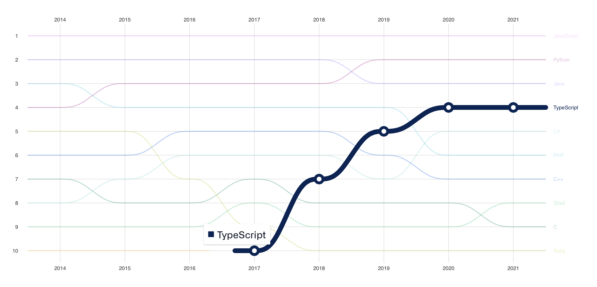

types, interfaces, generics...
JS
The browser can't run TypeScript
function sum(a, b) {
return a + b
} // JavaScript
sum(1, 2); // 3
sum(1, "3"); // 13 nstead of 4
function sum(a: number, b:number) {
return a + b
} // TypeScript
sum(1, "3"); // Error
We can also see what TypeScript was the fastest growing language in 2022.
TypeScript is a powerful and offers many benefits over JavaScript.
With its added features like type checking, code organization, and optional type annotations, TypeScript helps you to write cleaner, more readable code that is easier to maintain and debug.
By taking advantage of the language’s strengths, you can improve your coding skills and make your development process more efficient and productive.